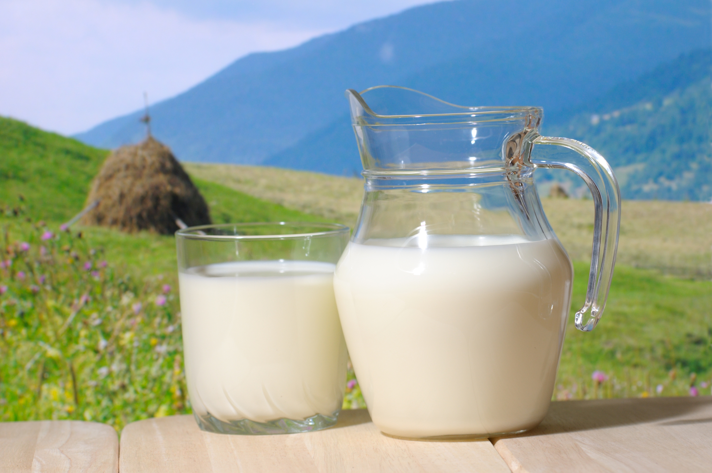
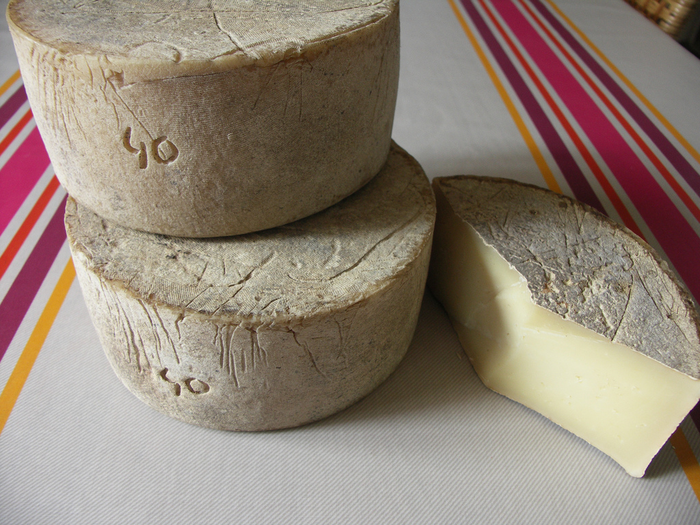
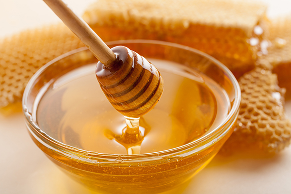
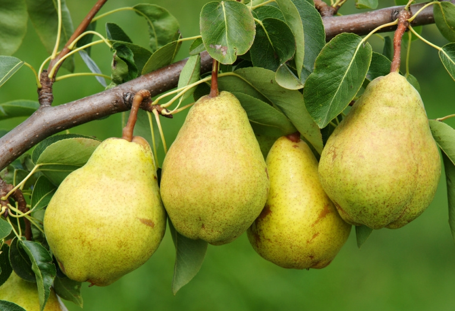
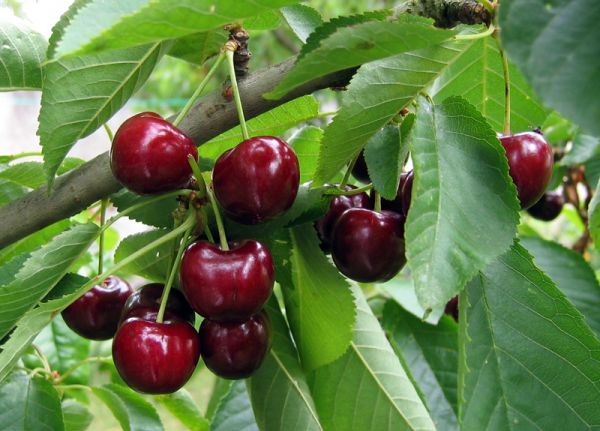

NOS PRODUITS
La vente directe de produits frais et fermiers sans intermédiaire, directement du producteur au consommateur. Tous les produits mis en vente sont uniquement issu de la ferme. Des produits bio de grande qualité, la vente s'effectue uniquement sur place. De nouveaux produits sont à venir, notamment des légumes tel que des carottes, salades, poireaux, potirons...
|  | Lait de vache :Provenant de nos six vaches, du lait frais comme nul part ailleurs ! |
 | Fromage de brebis :Réalisé avec le lait de nos brebis, si le déroulement de la fabrication vous intéresse, vous pouvez vous inscrire à l'atelier correspondant en cliquant ici. |
|  | Miel :Issu de nos ruches, il s'agit du miel préféré des enfants et des petits déjeuners. |
 |
Pommes :Nous disposons de plusieurs variétés afin d'élagir votre choix ! |
 | Poires :Des poires juteuses et sucrées ! |
 | Cerises :Sucrées comme on les aime ! |